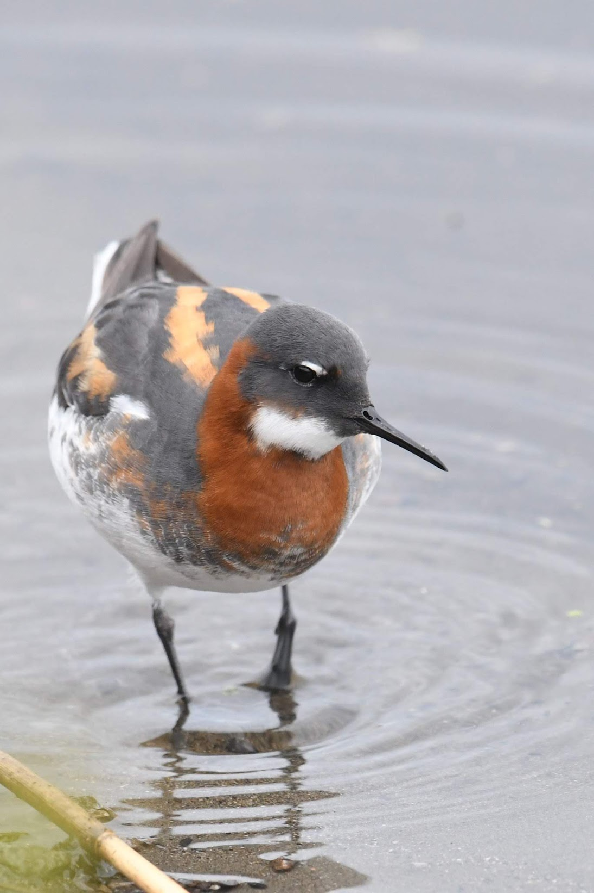

2023年現在、多くの鳥が減少傾向にあると言われており、かつては普通に観察されていたものの近年ではめっきり姿を見なくなってしまった種類も少なくありません。例えば、2000年代の冬季の砂浜海岸では比較的観察することができたというマダラウミスズメを陸地から観察することは今では非常に困難になってしまいました。残念ながら深刻な事態は現在も進行中であることを否定できません。埼玉に住んでいた当時の私はエトロフウミスズメの大群はもっと沢山見られるものだと思っていました。
一方で、以前より観察がしやすくなっている鳥としてノハラツグミやアカアシミツユビカモメなどが挙げられます。
今、私達が“以前より”という過去からの増減を知ることができるのは、過去に鳥を精力的に観察し、その記録をホームページやブログに遺して下さった方々のお陰です。それら情報の恩恵を享受し2020年代初頭の北海道で野鳥観察を楽しんだ以上、今現在の鳥類層を知る手がかりを将来に遺すことは鳥屋としての責務である感じています。
ところで、情報伝達手段としてSNSが台頭する今日、多くの鳥屋がTwitterなどに鳥の写真や観察記録を投稿します。SNSはリアルタイムに近い時間スケールでの情報拡散力に長けていますが、過去の情報を検索する手段としては適していないと考えます。さらにその強い情報拡散力のために観察日時やおおまかな場所情報、種名などを意図的に省く投稿者が多く、SNSを介してある時代の正確な鳥類層を知ることは困難であると感じています。さらに、ブログという形式もサービス終了の危険性があります。そこで今回、このホームページを設立することを思い立ちました。
将来、このページが2020年代初頭における北海道の鳥類層を知る一助になれば幸いです。

令和5年2月9日